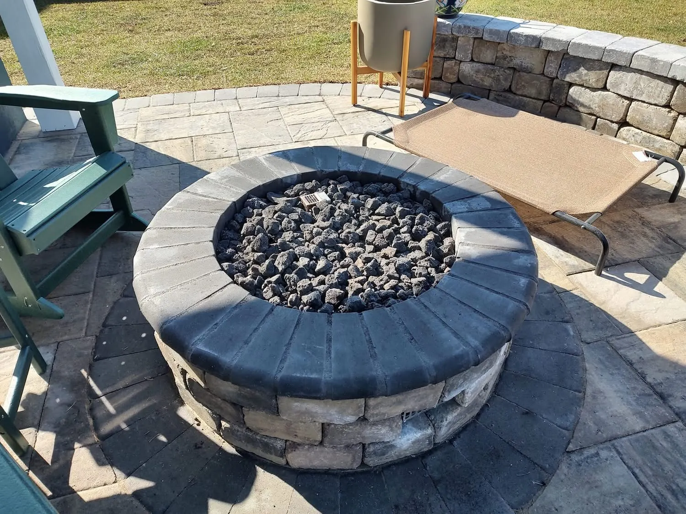
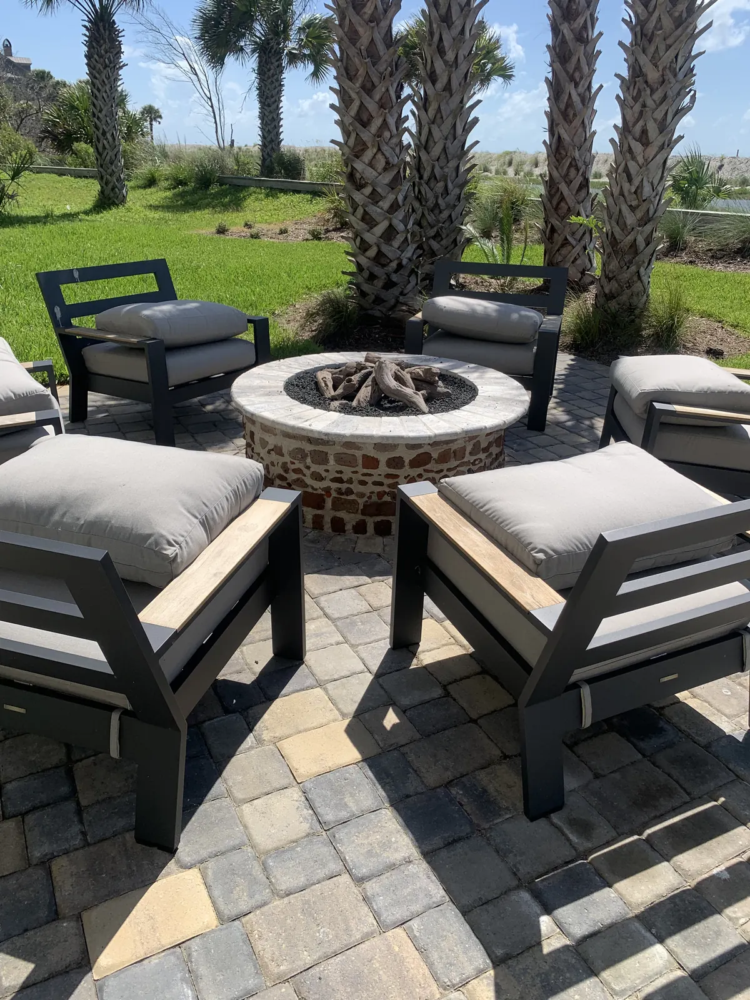

Custom Fire Pits in Charleston, SC

Fire Pits The Cheapest Thing You Can Add That Gets Used Most
A fire pit is the least expensive thing we build and, job for job, the one that changes how much a backyard gets used. It gives a patio a reason to be sat in from October through April, which in Charleston is most of the year.
We build them in masonry, run the gas ourselves and set them into the patio so the whole thing reads as one piece of work rather than a kit dropped on top of pavers. Doug and Zach Cramer look at every job before quoting it.
If you want something taller that throws heat and doubles as a wall, that is an outdoor fireplace instead.
What a Fire Pit Costs
This is the rare part of a backyard where a small budget still buys something good.
| Simple kit fire pit | from $1,000 |
|---|---|
| Custom masonry fire pit | $2,500 and up |
| Custom fire bowls on pedestals | $2,000 and up |
What moves the number: the material, the size, the cap you choose, and whether gas is run to it. Every quote follows a free consultation at your home.
Stackable Block Through Custom Masonry
Stackable block is the cheapest thing we can do. Above that we build in brick or CMU and finish it — plaster, microcement, stucco or tabby. Tabby is the one people picture when they picture the Lowcountry.
The cap is natural stone, usually travertine or bluestone, or a concrete paver. The cap is what you set a drink on and what people put their feet near, so it is worth choosing deliberately.

The Edisto Fire Pit, Built From What Was in the Ground
A client on Edisto had been digging on her lot near the beach and kept turning up old brick pieces and pebbles. She asked whether we could use them.
We built her fire pit out of them: a soldier course at the bottom, then a running bond, then a band of the pebbles she had found, then running bond again, topped with travertine. It is a custom fire pit made from material that came out of her own yard, which is not something you can order from a catalog.
Gas or Wood, and Where the Tank Goes
Gas is the convenient one. It lights on demand, there is nothing to clean up, and it goes out when you are done. Wood is the fun one — the setting up, the smell, the burning of the logs — and it is more maintenance.
We run the gas ourselves. A gas line is preferable, because then you are never swapping out a propane tank on the night you wanted to use it. For jobs where the pool deck is already finished and we would have to tear it up to run a line, a propane tank is the good solution. On the Summerville fire bowls we built stone pedestals with a quartzite countertop and a door in the side to store the tank out of sight.
We also install smokeless inserts if you want a wood fire without wearing the smoke.
Fire Glass or Lava Rock
On a gas pit the media in the bowl is a real choice. Lava rock is the traditional look, costs less and reads natural against stone. Fire glass is tempered glass that catches the light and does not break down, and it suits a modern build. Neither one burns; both sit over the burner and spread the flame.
Size, Seating and Where It Sits
We build most fire pits 36 to 48 inches across and 16 to 18 inches tall. That height is comfortable to sit beside and low enough to see over.
Leave a minimum of 6 feet of clear space around the pit for chairs and for people to walk behind them. This is the single most common planning mistake we see: a patio sized for the fire pit but not for the ring of chairs around it, plus the walkway behind those chairs.
Placement is mostly about flow and how you use the yard, not about smoke. Smoke only becomes a real problem when a fire is under a structure, and then it needs a chimney.
Built-In or Freestanding
Built-in is ideal if you have the space. Plenty of yards do not, and those homeowners are usually better served by a freestanding pit they can move out of the way, so the patio can be used for other things too. We also build seat walls around a pit when the space suits it.
Fire bowls on pedestals are a different product from a fire pit — they are a design feature, usually beside a pool, rather than something you pull chairs around.
How Far From the House?
The rule most people find online is a state-adopted fire code, not a local Charleston ordinance, which means it applies across every town we work in.
| Open wood-burning fire | 25 ft from a structure or combustible material (IFC 307.4.2) |
|---|---|
| Portable outdoor fireplace or chiminea | 15 ft (IFC 307.4.3) |
| Permanently piped gas fire pit | the manufacturer’s listed clearances for that unit |
This is why a gas fire pit can sit closer to the house than a wood one. A piped gas pit is a listed appliance, installed to the clearances in its own instructions under the fuel gas code. It is not an open fire under IFC 307, so the 25-foot setback does not apply to it.
North Charleston’s open-burning ordinance mirrors the same recreational-fire language. Individual towns can be stricter, and the local fire marshal has the final say, so we confirm the clearance for your specific address before we set a fire pit.
How We Build Yours
- Free consultation. We look at the patio, the traffic through the yard and where the gas can come from.
- Material and size. Stackable block, brick or CMU with a plaster, microcement, stucco or tabby finish, and the cap.
- Clearances confirmed for your address and fuel type.
- We build it and run the gas, if it is a gas pit, with our own crew.
- We set the surround — the patio, seat walls or the paver work around it.
Fire pits go in alongside patios and pavers, retaining and seat walls and pool decks. For a taller structure that throws more heat and can screen a space, see outdoor fireplaces.
Areas We Serve
Cramers Landscaping provides its services throughout:
We build outdoor fireplaces and fire pits in Charleston, SC throughout Charleston County, including Charleston, Mount Pleasant, West Ashley, Summerville, Folly Beach, and Sullivan’s Island.
- Charleston, SC
- Mount Pleasant, SC
- Isle of Palms, SC
- North Charleston, SC
- James Island, SC
- West Ashley, SC
- Kiawah Island, SC
- Summerville, SC
- Daniel Island, SC
- Johns Island, SC
Frequently Asked Questions
How much does a custom fire pit cost in Charleston?
A simple kit fire pit starts around $1,000. A custom masonry fire pit runs $2,500 and up, and custom fire bowls on pedestals start around $2,000. Material, size, the cap and whether gas is run to it move the price.
How far should a fire pit be from the house?
For an open wood-burning fire the code setback is 25 feet from a structure or combustible material (IFC 307.4.2), and 15 feet for a portable outdoor fireplace or chiminea (IFC 307.4.3). A permanently piped gas fire pit is a listed appliance and follows the manufacturer clearances for that unit instead, which is why gas pits can sit closer. Towns can be stricter and the fire marshal has the final say, so we confirm it for your address.
Gas or wood burning fire pit?
Gas is more convenient: it lights on demand and there is no cleanup. Wood is the fun of setting it up and burning the logs, with more maintenance. We run gas lines ourselves, and a permanent gas line is preferable so you are not swapping propane tanks. If the pool deck is already finished, a hidden propane tank is the better solution.
How big should a fire pit be, and how much space does it need?
We build most at 36 to 48 inches across and 16 to 18 inches tall. Leave a minimum of 6 feet of clear space around the pit for chairs and a walkway behind them. Undersizing that space is the most common planning mistake.
What are fire pits built out of?
Stackable block is the most affordable. Above that we build in brick or CMU and finish it in plaster, microcement, stucco or tabby. Caps are natural stone such as travertine or bluestone, or a concrete paver.
Do you install smokeless fire pit inserts?
Yes. We install smokeless inserts, and we build seat walls around a pit when the space suits it.
Should a fire pit be built in or freestanding?
Built-in is ideal if you have the space for it. Many yards do not, and a freestanding pit that can be moved out of the way leaves the patio usable for other things.
Get in Touch Ready to Transform Your Landscape?
If you’re searching for a landscaping company in Charleston that delivers expertise, reliability, and long-term value, Cramers Landscaping is here to help. We offer free consultations and custom project quotes tailored to your needs.
Location
9153 Markleys Grove Blvd, Summerville, SC
Phone
Hours
Monday – Friday: 8:00 AM – 5:00 PM
Saturday: 9:00 AM – 2:00 PM
Sunday: Closed